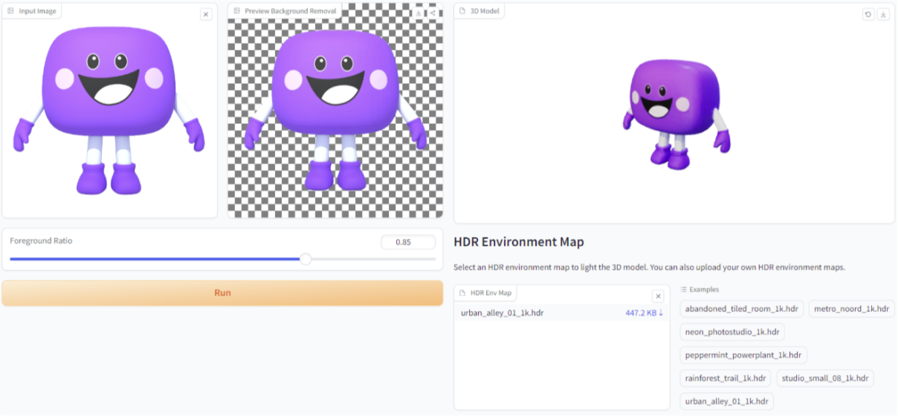
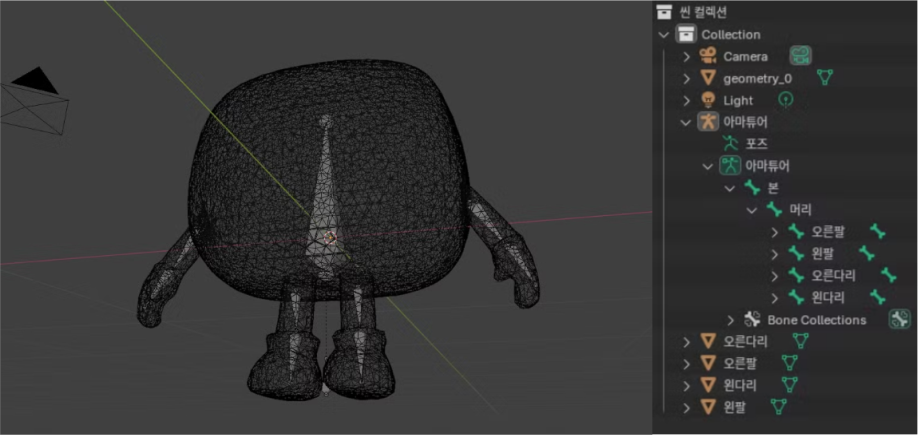

Concept
사실 라온이는 게임 속에서 오랫동안 우리를 지켜봐왔어요.
특별한 장소에서 만나게 된 라온이를 직접 움직여보며 라온이가 누구인지 함께 알아봐요.
사실 라온이는 게임 속에서 오랫동안 우리를 지켜봐왔어요.
특별한 장소에서 만나게 된 라온이를 직접 움직여보며 라온이가 누구인지 함께 알아봐요.
'라온이가 누구지?' 는 웹지엘로 구현된 공간으로 별도의 설치없이 웹 상에서 만나볼 수 있는 메타버스 공간입니다. 유저는 라온이와 대화하면서 라온이가 누구인지 알아가고, 라온이를 자유롭게 움직이며 이곳저곳을 살펴볼 수 있습니다. 유저는 라온이와 함께하는 즐거운 경험을 통해 라온이에게(우리에게) 매력을 느낄 수 있을거에요.
※ 게임화: 게임이 아닌 곳에서 사용을 극대화시키기 위해 게임 플레이 기법을 적용하는 것을 뜻함
유저에게 메타버스 공간을 끝까지 플레이시키기 위한 방법으로 이스터에그 (알파벳 R,H,A,O,N)을 모으는 재미요소를 도입했어요. 이 과정에서 자연스럽게 우리회사 라온이 생각하는 것에 대해서도 알게 됩니다.
라온이는 어떤 생각을 할까 ? 각 장소에서 라온이와 대화해보세요. 스토리텔링을 따라가보면 더욱 즐거운 체험이 가능합니다.
열기구를 타고 하늘을 여행하는 엔딩으로 마무리하며, MORE 클릭시 회사소개 페이지로 유도합니다.
메타(구 페이스북)에서 제작된 웹기술인 React를 웹에서 최적화시킨 Next.js와
WebGL 기반 Threejs 라이브러리의 React 버전인 R3F을 이용해
무거운 3D공간을 최고효율 성능과 작업속도로 만들어냈어요
AI 인공지능 플랫폼 사이트인 허깅페이스에서 라온이 2D이미지를 넣어 3D 모델을 생성했어요
그리고 3D도구 블랜더를 사용한 리깅 작업을 통해 라온이의 움직임을 구현했어요
